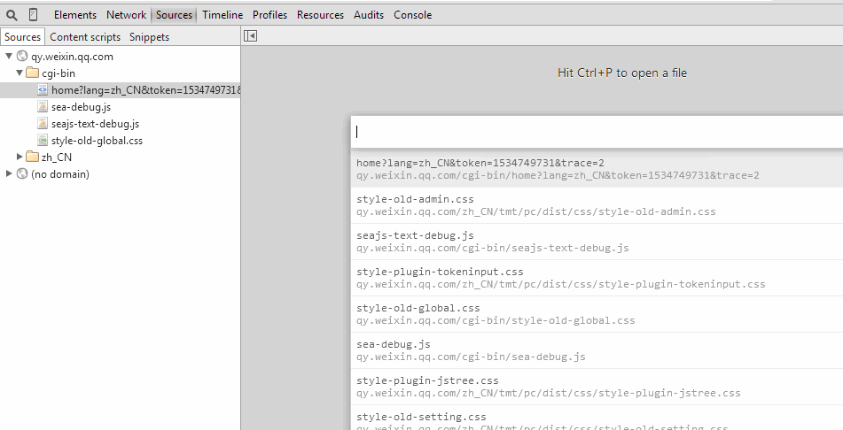
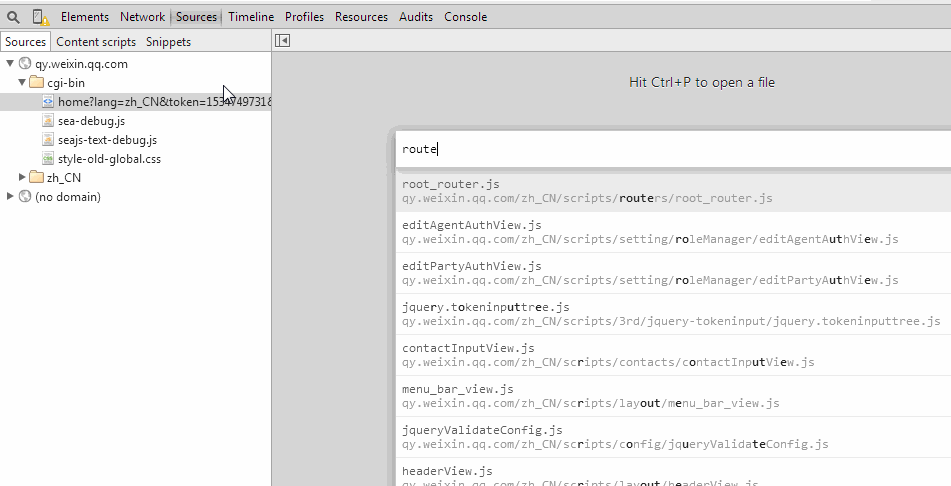
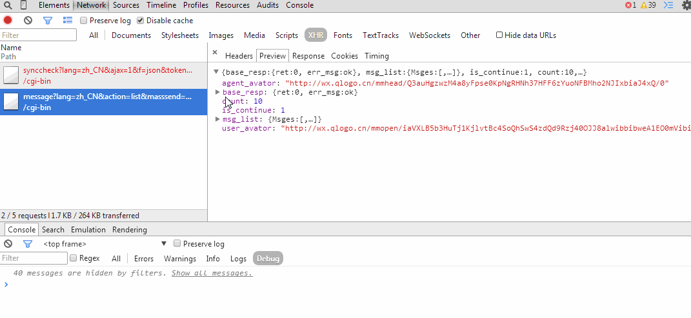
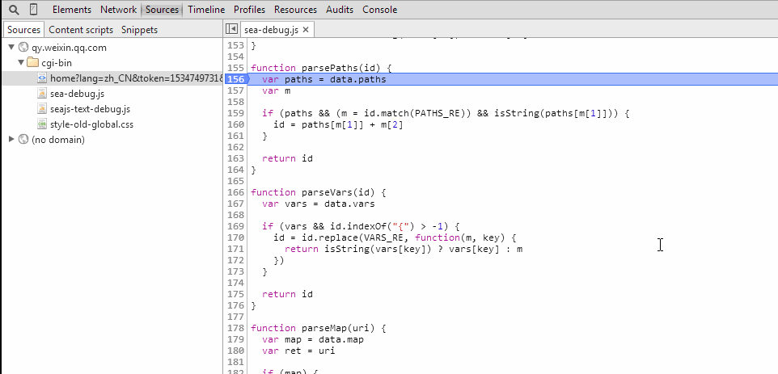
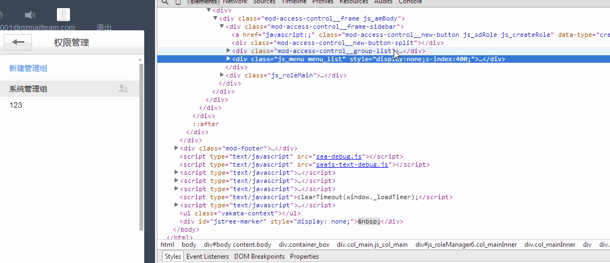
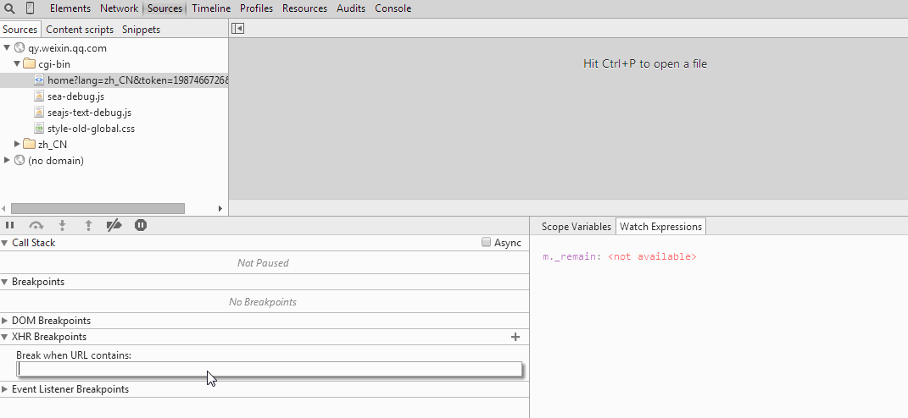
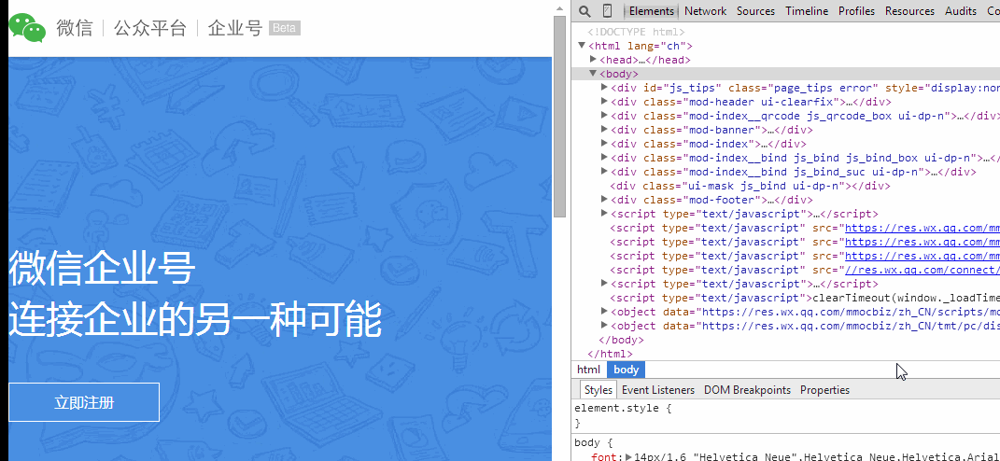

优雅且高效的使用Chrome-Developer-Tools（下）
Chrome Developer Tools是前端开发不可缺少的利器，这里介绍几个有趣的Command Line API，使得开发调试过程中，不经意的透露出那点点的优雅。
主要内容：
- 随意的文件跳转
- 随意的方法跳转
- 灵活的断点设置，我要你停你才停
- 快速打开关闭Console
- Elements页卡中几个有用的快捷键
- 指定的XHR断点
- 快速模拟移动设备
之前有分享到我们可以通过 Command Line API 来提高我们的开发效率。除此之外，还有一些比较有趣的快捷键和调试方法，也能帮助提高大家的生产效率。
几个小事项：
- 文中提到的快捷键 command 在WIN下都是对应Ctrl；
- 当焦点在dev tools上时，快捷键才有效~。
随意的文件跳转
使用Sublime的同学，一定非常喜欢command + p，这种随意的文件跳转，其实dev tools中也有类似的跳转，而且快捷键也是：
1 | command + p // 跳转到对应文件 command + p + : + 数字 // 跳转到对应文件对应行 |

是不是再也不用在Sources中，用鼠标一个一个找文件了。
#随意的方法跳转
Sublime中，command + R是跳转到方法，漂亮的是 dev tools中也有类似的快捷键：
1 | command + shift + o |
来，我们先用command + p打开一个文件，然后command + shift + o,跳转到任意一个方法。

#灵活的断点设置，我要你停你才停
很多时候，需要在循环中打个断点，着实麻烦，不得不一次又一次的运行循环，直到我们需要的那个条件时候停止，手快的时候多按了，那就只好从头再来一次了。
我们在断点的时候是可以设置一个 Breakpoint 的,满足条件的时候才停止，下图演示了一个，当消息id为所确定消息时候，断点才生效。

#快速打开关闭Console
屏幕不是很大的时候，一般都都会关掉Console，使得代码的可视范围能大一些，然后通过点击右上角的Show/Hide drawer按钮来打开或者关闭Console。其实这时候，可以快捷的使用ESC键来打开或者关闭Console。

#Elements页卡中几个有用的快捷键
- 方向键快速选择，上下键快速导航，左右键收起展开；
- enter快速编辑属性；
- tab属性切换；
- H键快速隐藏dom，知道这个快捷键之前，我要么删除dom看效果，要么手工输入display:none，有H就方便多了；

#指定的XHR断点
有时候，我们需要在指定的xhr请求的时候，有一个断点，那可以这样：

然后可以通过call stack快速的找到对应的代码。
#快速模拟移动设备
打开dev tools，然后执行以下快捷键：
1 | command + shift + M // 切换模拟Device command + shift + R // 刷新页面 |

另外，强烈建议大家都升级到chrome 38以上版本，可以模拟网络环境，对移动开发真是在好不过了。